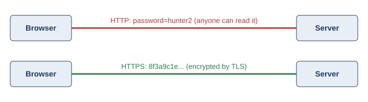

HTTPS and Web Security
Why Plain HTTP Is Not Safe
Plain HTTP sends data without encryption. Anyone between the browser and the server, such as another person on the same coffee shop Wi-Fi, could see what is being sent. This creates three risks:
- Eavesdropping – someone reads the data, such as a password.
- Tampering – someone changes the data before it arrives.
- Impersonation – a fake server pretends to be the real website.

What HTTPS Adds
HTTPS is not a separate protocol. It is regular HTTP running inside a secure TLS (Transport Layer Security) connection. A good way to picture it: HTTP is the letter, and TLS is the sealed, tamper-proof envelope around it.
| Guarantee | What It Means | Risk It Stops |
|---|---|---|
| Confidentiality | Only the browser and server can read the data. | Eavesdropping |
| Integrity | Any change to the data in transit is detected. | Tampering |
| Authentication | A certificate proves the server is who it says it is. | Impersonation |
The TLS Handshake (Simplified)
Before any encrypted data is sent, the browser and server agree on how to talk securely:
- The browser sends a client hello listing the encryption methods it supports.
- The server replies with a server hello and its digital certificate.
- The browser checks that the certificate was signed by a trusted certificate authority.
- Both sides create shared session keys, and encrypted communication begins.
HTTPS Today
Free certificate services like Let's Encrypt (launched in 2015) removed the cost barrier for website owners. Browsers now mark plain HTTP pages as “Not Secure,” and most web traffic today is sent over HTTPS.